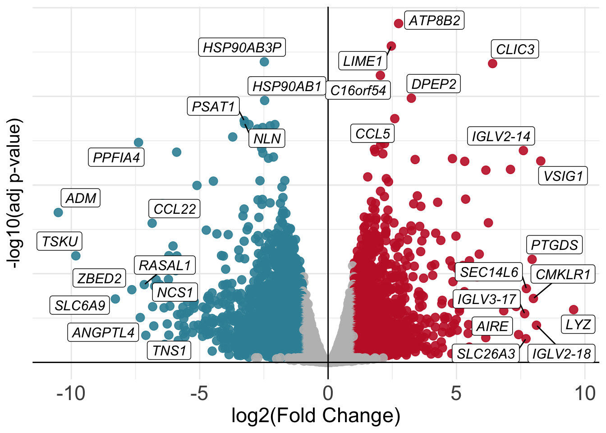
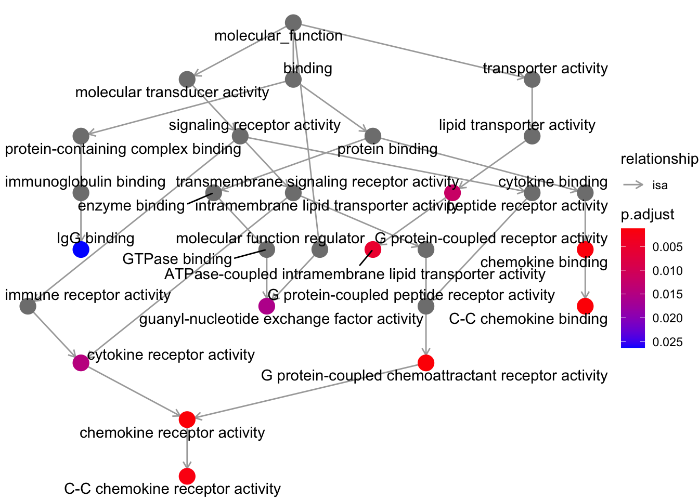

# Check out the design formula we specified (do not copy this, you should have it in your variable `design`)
~ Donor + SampleGroupDay 3
Objectives
- Learn about the theory behind differential expression analysis (DEA)
- Perform differential expression analysis using
edgeR - Visualize the results
- Perform further downstream analysis on interesting gene groups
Differential Expression Analysis
The main purpose of the steps we performed previously is to get to this point with a fair knowledge of the data at hand, all the steps have to be repeated each time one starts with some fresh new data (no data is the same!!). Now we can start performing differential expression analysis with the edgeR package. The main concept behind it is to contrast two categories of our interest in the data (i.e. CD8+ Tex vs CD8+ Trest) and check which genes are predominantly (defined in a statistical sense) expressed in one category as opposed to the other. As introduced previously, we tell edgeR which comparisons to perform through the design formula we specified above when we created our DGEList object dds. We can recap the design formula that we specified.
With that design formula we are telling the software that we are interested in checking for the gene expression differences happening between the categories present in the SampleGroup column of our samples table while simultaneously correcting for the possible uninteresting differences that can arise across different donors, whose information is stored in the Donor column of the samples table which we can check out below. The Donor therefore represents our batch whose effect we are trying to correct for.
| Donor | SampleGroup | |
|---|---|---|
| BSSE_QGF_204446 | HD276 | Trest |
| BSSE_QGF_204447 | HD276 | Ttumor |
| BSSE_QGF_204448 | HD276 | Teff |
| BSSE_QGF_204449 | HD276 | Tex |
| BSSE_QGF_204450 | HD280 | Trest |
| BSSE_QGF_204451 | HD280 | Ttumor |
The categories are exactly the ones we have been plotting all along up to this point (the different CD8+ T-cell types).
üí° Given that we have four differences categories (these are also called
levelsinR) in ourSampleGroupcolumn (which can also be called afactorinR),edgeRcould perform different comparisons since these are pairwise. We need to keep in mind that our reference values are referred to the CD8+ Teff group!
The Main edgeR Function
Let’s perform differential expression analysis with edgeR on our dataset using the main function for the task in the package, glmTest(). Without going into the mathematical details, this function fits a generalized linear model (GLM) to the data in order to perform inference and decide which genes are statistically up- or down-regulated. We first need to compute gene-wise dispersion estimate with the function estimateDisp(). These are needed by the model in order for its underlying assumptions to hold true. We can visually inspect the fit of the dispersion estimates below.
# First we fit gene-wise dispersion estimates to accomodate the theoretical assumptions of the model
dds <- estimateDisp(dds, design, robust=TRUE)
# Plot the fitted dispersion values
plotBCV(dds)
From the dispersion estimate we can see that we are capturing and modelling efficiently the gene-wise dispersion in the dataset which is intrinsically present due to variation. This variation is quantified in edgeR with a BCV or a Biological Coefficient of Variation which takes into account both unwanted biological variability (specified in the design) and technical variation.
# Fit the GLM
fit <- glmFit(dds, design)
# Perform differential expression testing given the design formula we wrote previously
lrt <- glmLRT(fit, coef=7)Notice how we did not use the transformed version of the dataset (log2dds) but we started from the object dds. As previously mentioned, the package needs to start from raw count data to correctly assess differences in gene expression.
Let’s say that we are very interested in the differences occurring between CD8+ Tex and CD8+ Teff cells. The reason why we specified coef=7 in the code above is explained by how edgeR interprets the design matrix that we built previously, which specifies the kinds of comparison to make. If we take a look at it we can see how the 7th column is the one related to the Tex group, the one we want to compare against our reference group Teff.
head(design, 4)| (Intercept) | donorHD280 | donorHD286 | donorHD287 | sample_groupTrest | sample_groupTtumor | sample_groupTex |
|---|---|---|---|---|---|---|
| 1 | 0 | 0 | 0 | 1 | 0 | 0 |
| 1 | 0 | 0 | 0 | 0 | 1 | 0 |
| 1 | 0 | 0 | 0 | 0 | 0 | 0 |
| 1 | 0 | 0 | 0 | 0 | 0 | 1 |
| 1 | 1 | 0 | 0 | 1 | 0 | 0 |
| 1 | 1 | 0 | 0 | 0 | 1 | 0 |
| 1 | 1 | 0 | 0 | 0 | 0 | 0 |
| 1 | 1 | 0 | 0 | 0 | 0 | 1 |
| 1 | 0 | 1 | 0 | 1 | 0 | 0 |
| 1 | 0 | 1 | 0 | 0 | 1 | 0 |
| 1 | 0 | 1 | 0 | 0 | 0 | 0 |
| 1 | 0 | 1 | 0 | 0 | 0 | 1 |
| 1 | 0 | 0 | 1 | 1 | 0 | 0 |
| 1 | 0 | 0 | 1 | 0 | 1 | 0 |
| 1 | 0 | 0 | 1 | 0 | 0 | 0 |
| 1 | 0 | 0 | 1 | 0 | 0 | 1 |
üí° In GLMs, design matrices are built to communicate the way we want to model samples when testing for gene expression differences. Some packages keep this aspect less exposed than other to allow users which are less familiar with the mathematical concepts to still use the package. Often, better knowledge allows better control and flexibility over what we do, at the cost of greater responsibility!
Exploring Results
After having used the main edgeR function, we can actively explore the results of the analysis for the comparisons of our interest. For example we might want to check if any gene is up-regulated during the process of CD8+ T-cell exhaustion. We can later filter the results based adjusted P-value used to accept or reject the null hypothesis (\(H_{0}\)) of a gene NOT being differentially expressed between the two conditions.
With the code below we can extract a table that we call res which contains the results for every single gene, stored in separate rows.
# Extract the results
res <- as.data.frame(lrt$table)We can now check out our results object, which will be a data.frame, a table.
# Check out results object
head(res, 10)| logFC | logCPM | LR | PValue | |
|---|---|---|---|---|
| ENSG00000182888 | -0.7030535 | -0.9936256 | 4.2525633 | 0.0391911 |
| ENSG00000286431 | 1.5461179 | -0.1530747 | 11.8110610 | 0.0005888 |
| ENSG00000101846 | 0.2581339 | 1.7994127 | 1.9918449 | 0.1581481 |
| ENSG00000285679 | 0.0118590 | -1.7883345 | 0.0007381 | 0.9783257 |
| ENSG00000101849 | 0.1295766 | 6.2607280 | 1.2854701 | 0.2568844 |
| ENSG00000047644 | 0.4654929 | 6.7504933 | 14.5868099 | 0.0001338 |
| ENSG00000004961 | -0.6228863 | 3.7283726 | 23.4757372 | 0.0000013 |
| ENSG00000005302 | 1.0203073 | 6.7934565 | 67.0298287 | 0.0000000 |
| ENSG00000101911 | -0.8501682 | 4.8448978 | 55.9050804 | 0.0000000 |
| ENSG00000229083 | -1.4635875 | 0.8512208 | 10.3340205 | 0.0013060 |
We can additionally print out a summary of the results of the differential analysis at a P-value < 0.05 by using the following code:
summary(decideTests(lrt)) sample_groupTex
Down 7046
NotSig 8714
Up 6923In here we can see the type of comparison we are performing (vs the reference, in our case CD8+ Teff cells), the P-value threshold we used and the number of up-regulated and down-regulated genes at varying log-fold change levels, keep in mind that a log-fold change of 1 corresponds to a difference in raw gene expression value of 2 times since the log has a base of 2. So, to recap, all of the genes with log-fold change of 1 or more are twice as expressed in one condition compared to the other and we will later filter genes based on the fold-change value.
Saving Results
Let’s save the results object we just generated in a .csv file. We can then source it back and load it into the session using the code we have seen at the end of the first day of the workshop.
# Save the results object
write.table(res, "results.csv", sep=",", quote = F)In the code below, we will create two new tables with the genes that were up-regulated and down-regulated in the comparison we performed, we will use these later.
# Extract the information related to up-regulated and down-regulated genes
up_df <- res %>% as.data.frame() %>% filter(PValue < 0.05 & logFC > 1)
down_df <- res %>% as.data.frame() %>% filter(PValue < 0.05 & logFC < -1)If we check the table with the up-regulated genes we can see it has the following structure (we just took some specific rows - genes - of the complete results table corresponding to up-regulated genes):
head(up_df, 4)| logFC | logCPM | LR | PValue | |
|---|---|---|---|---|
| ENSG00000286431 | 1.546118 | -0.1530747 | 11.811061 | 0.0005888 |
| ENSG00000005302 | 1.020307 | 6.7934565 | 67.029829 | 0.0000000 |
| ENSG00000176896 | 1.483553 | 2.7280733 | 49.397968 | 0.0000000 |
| ENSG00000289449 | 1.587543 | -1.3504361 | 6.001932 | 0.0142902 |
üí° How would you check if the dimensions of the tables we extracted correspond to the number of differentially expressed genes present in the summary we printed above? (hint: go back and look at how we checked for the number of rows and columns in a table)
Visualizing Results With MD Plots
MD plots are used to get a sense of the proportions of up- and down-regulated genes between two conditions and the number of counts per million (CPM) of each gene, to check if genes with higher counts are statistically preferred to be also differential.
# Plot the MD Plot
plotMD(lrt)
abline(h=c(-1, 1), col="gray")
With the gray line we indicate a fold-change of +/- 1 which, if you recall, stands for an actual magnitude of change of value 2.
Visualizing Results With Volcano Plots
Once we have our results from the comparison, we might want to present them graphically to aid their interpretation by other people or to emphasize messages of interest within them (like the statistics only for some genes of interest). One way to visualize results from a differential expression analysis is to draw a volcano plot. The goal of a volcano plot is to display and summarize the main metrics of output from a differential expression analysis, these consist of P-values and log-fold changes associated with each gene in the dataset for the specific comparison we are performing (Tex vs Teff in our case). These two variables can be plotted together to get a feel for the overall results in the analysis. Let’s plot a volcano summarizing the results of the comparison we have performed.
library(tidyr)
# Set the threshold just for visualization!
log2FC_val = 1
padj_val = 0.05
# Create a table with gene information
volcano_corr = as.data.frame(res) %>% mutate(names=rownames(res)) %>% drop_na()
# Create a separate column in the table with the information needed to color point in three categories
volcano_corr$threshold=ifelse(volcano_corr$logFC >= log2FC_val & volcano_corr$PValue < padj_val,"A",
ifelse(volcano_corr$logFC <= -log2FC_val & volcano_corr$PValue < padj_val, "B","C"))
# Plot!
ggplot(volcano_corr, aes(x=logFC, y =-log10(PValue), color=threshold)) +
geom_point(alpha=0.9, size=3) +
scale_color_manual(values=c( "B"="#3891A6","A"="#C52233", "C"="grey")) +
xlab("log2(Fold Change)") + ylab("-log10(adj p-value)") +
theme_minimal() +
geom_vline(xintercept=0, color='black') +
geom_hline(yintercept=0, color='black') +
theme(legend.position="none", axis.title.x = element_text(size = 17),
axis.text.y=element_text(size = 0),
axis.text.x=element_text(size = 17),
axis.title.y = element_text(size = 15)) 
Mapping IDs to Gene Symbols
The volcano plot above is nice but it is not so informative since we cannot see any gene name! Unfortunately we do not have recognizable gene names in the res object, as we can see below:
# In this case gene names are the names of the rows of our table
rownames(res)[1:20] [1] "ENSG00000182888" "ENSG00000286431" "ENSG00000101846" "ENSG00000285679"
[5] "ENSG00000101849" "ENSG00000047644" "ENSG00000004961" "ENSG00000005302"
[9] "ENSG00000101911" "ENSG00000229083" "ENSG00000205542" "ENSG00000261030"
[13] "ENSG00000226985" "ENSG00000198759" "ENSG00000176896" "ENSG00000123595"
[17] "ENSG00000046651" "ENSG00000289449" "ENSG00000233247" "ENSG00000130150"We can see that we currently have Ensembl Gene IDs as opposed to gene symbols! We can fix this by converting between the two, this can be achieved in R through dedicated packages like org.Hs.eg.db which map between the two types of gene identifiers. Let’s do it using the code below.
# Use the package for the conversion between Ensembl IDs and Gene Symbols
library(org.Hs.eg.db)
volcano_corr$gene_names <- mapIds(org.Hs.eg.db, keys=row.names(volcano_corr), column="SYMBOL", keytype="ENSEMBL", multiVals="first")We can check that we now have new mapped gene symbols that we can use to make our volcano plot informative!
volcano_corr$gene_names[1:40] [1] "RPS27AP20" NA "STS" NA "TBL1X"
[6] "WWC3" "HCCS" "MSL3" "PRPS2" NA
[11] "TMSB4X" NA "LINC01203" "EGFL6" "TCEANC"
[16] "RAB9A" "OFD1" NA NA "MOSPD2"
[21] "CA5BP1" "CA5B" "ZRSR2" NA "SYAP1"
[26] "TXLNG" "NHS" "SCML1" "CDKL5" NA
[31] "LOC101928415" "PDHA1" "CNKSR2" "MBTPS2" "YY2"
[36] "SMS" "PHEX" NA "PRDX4" "SAT1" And finally we can try to plot again our volcano with the addition of gene names!
Show code
library(ggrepel)
volcano_corr <- volcano_corr[order(volcano_corr$PValue, decreasing = FALSE),] %>% drop_na()
names_list <- c(volcano_corr$gene_names[1:10], "TOX", "ENTPD1", "HAVCR2")
neg_fc <- volcano_corr[order(volcano_corr$logFC, decreasing = TRUE),] %>% filter(PValue < 0.05 ) %>% .$gene_names %>% head(10) # Change these numbers to avoid overcrowding in the plot
pos_fc <- volcano_corr[order(volcano_corr$logFC, decreasing = FALSE),] %>% filter(PValue < 0.05) %>% .$gene_names %>% head(10)
names_list <- c(names_list, neg_fc, pos_fc)
volcano_corr <- volcano_corr %>% mutate(., stroke = ifelse(.$gene_names %in% names_list & volcano_corr$PValue < padj_val & volcano_corr$logFC > log2FC_val, 2, 0),
names=ifelse(.$gene_names %in% names_list,'mark','leave')) %>%
.[order(.$names),]
ggplot(volcano_corr, aes(x=logFC, y =-log10(PValue), color=threshold)) +
geom_point(alpha=0.9, size=3) +
scale_color_manual(values=c( "B"="#3891A6","A"="#C52233", "C"="grey")) +
xlab("log2(Fold Change)") + ylab("-log10(adj p-value)") +
theme_minimal() +
geom_vline(xintercept=0, color='black') +
geom_hline(yintercept=0, color='black') +
theme(legend.position="none", axis.title.x = element_text(size = 17),
axis.text.y=element_text(size = 0),
axis.text.x=element_text(size = 17),
axis.title.y = element_text(size = 15)) +
geom_label_repel(data=volcano_corr[which(volcano_corr$names=='mark' & volcano_corr$threshold=='A'),], aes(label=gene_names), max.overlaps = 30, color='black', size=4, fill='white', fontface='italic') +
geom_label_repel(data=volcano_corr[which(volcano_corr$names=='mark' & volcano_corr$threshold=='B'),], aes(label=gene_names), max.overlaps = 30, color='black', size=4, fill='white', fontface='italic')
Visualizing Results With Heatmaps
We can also plot differentially expressed genes in the two conditions of our interest using heatmaps. In this case we select genes based on their significance and visualize how their expression values change across samples just like we have done earlier.
# Select conditions to plot, since we are plotting differentially expressed genes, we need to select the two categories in the comparison
conds <- c("Tex","Teff")
# Take genes
diffs <- rbind(volcano_corr[volcano_corr$threshold == "A",], volcano_corr[volcano_corr$threshold == "B",])$gene_names
# Extract counts from `dds` object
mtx <- cpm(dds)[,rownames(samples[which(samples$SampleGroup %in% conds),])]
# Subset for differential genes
ids <- rownames(volcano_corr[which(volcano_corr$gene_names %in% diffs),])
# Subset matrix for genes of interest
mtx <- mtx[ids,]
# Create another table for annotating the heatmap with colors
df <- as.data.frame(samples[,c("Donor","SampleGroup")])
# Plot with pheatmap
pheatmap(mtx, cluster_rows=TRUE, show_rownames=FALSE,
cluster_cols=TRUE, annotation_col=df[which(rownames(df) %in% colnames(mtx)),], scale = "row")
Given that the number of differentially expressed genes can sometimes be very high, we cannot pretend to explore them manually one by one understanding their function! As we will see, there are further downstream analyses we can perform to get a sense of trends and pathways activated in the cell type of our interest. These analyses which look at genes in groups or ontologies try to match conditions with functions, to better elucidate what is going on inside cells in a specific condition.
Further Downstream Analyses
Once we have our differentially expressed genes, we can perform various downstream analyses to check the functional aspects of the group of genes which are up- or down-regulated in our condition of interest. In the following sections, we will go through two of these, Gene Set Enrichment Analysis (GSEA) and Gene Ontology Enrichment Analysis (GO).
GSEA
Gene Set Enrichment Analaysis was first published in 2005 as a method to interpret genome-wide expression profiles from RNA-seq data using sets of genes with known biological functions. In this sense, GSEA is used to check at which level a signature of genes is enriched in an expression profile. We can graphically summarize the steps in GSEA using the following picture, from the original publication.

GSEA needs two ingredients, a ranked gene list from our analysis (for instance genes ordered by log-fold change) and a list of genes with biological relevance (for instance genes known to regulate CD8+ T-cell exhaustion).
1. We start by taking our list of up- or down- regulated genes and order them based on the value of their fold-change so that our list will have genes that change a lot positively at the top and ones that change a lot negatively at the bottom. This will represent our ranking.
2. We then take one or more curated and archived gene sets which are related to a biological function we might be interested in investigating in our dataset.
3. Finally we go through our ranking from top to bottom counting the number of times we see a gene which is also in the gene set that we are looking at. We expect to see genes from a given gene set appear at the top of our ranking if that biological function is particularly important in the genes of our ranking.
Over the years, a collection of curated gene sets called MSigDB has been expanded and is now a great resource to check which ones are more or less enriched in our data at hand.

The web interface for the MSigDB gene set database
In our specific use case, we are going to run GSEA on the set of up-regulated genes in CD8+ Tex cells to check if a gene set of exhaustion is indeed enriched in the genes we have found up-regulated. For this task we are going to use the fgsea package. In order to extract the gene set without the need to directly download it, we are going to access MSigDB directly from R using another package called msigdbr.
üö® WARNING: This code that follows might kill your
Rsession inadvertedly. If this happens, don‚Äôt panic, and reload the object we saved before! Use the following syntax to get back on track after you resume the session:res <- read.table("results.csv", sep = ",") samples <- read.table("samples_table.csv", sep = ",")In this way you should be all set to successfully run all the code below! üôåüèª
Extract MSigDB Signatures
In the following chunk, we use a function from the msigdbr package to extract the gene set of our interest:
library(msigdbr)
# Extract the gene sets from the MSigDB database
immune_gsets <- msigdbr(species = "human", category = "C7", subcategory = "IMMUNESIGDB")Let’s see what’s in the immune_gsets object:
# Take a look at what we fetched from the database
head(immune_gsets, 5)| gs_cat | gs_subcat | gs_name | gene_symbol | entrez_gene | ensembl_gene | human_gene_symbol | human_entrez_gene | human_ensembl_gene | gs_id | gs_pmid | gs_geoid | gs_exact_source | gs_url | gs_description |
|---|---|---|---|---|---|---|---|---|---|---|---|---|---|---|
| C7 | IMMUNESIGDB | GOLDRATH_EFF_VS_MEMORY_CD8_TCELL_DN | ABCA2 | 20 | ENSG00000107331 | ABCA2 | 20 | ENSG00000107331 | M3044 | 16492737 | GSE1000002_1582_200_DN | Genes down-regulated in comparison of effector CD8 T cells versus memory CD8 T cells. | ||
| C7 | IMMUNESIGDB | GOLDRATH_EFF_VS_MEMORY_CD8_TCELL_DN | ABCC5 | 10057 | ENSG00000114770 | ABCC5 | 10057 | ENSG00000114770 | M3044 | 16492737 | GSE1000002_1582_200_DN | Genes down-regulated in comparison of effector CD8 T cells versus memory CD8 T cells. | ||
| C7 | IMMUNESIGDB | GOLDRATH_EFF_VS_MEMORY_CD8_TCELL_DN | ABHD14A | 25864 | ENSG00000248487 | ABHD14A | 25864 | ENSG00000248487 | M3044 | 16492737 | GSE1000002_1582_200_DN | Genes down-regulated in comparison of effector CD8 T cells versus memory CD8 T cells. |
We can see that every row is a different gene (the gene_symbol colums) with its associated gene set (gs_name column). We will now extract a gene set related to CD8+ T-cell exhaustion which comes from this publication and is names GSE9650_EFFECTOR_VS_EXHAUSTED_CD8_TCELL_DN in the database.
# Filter the `immune_gsets` table and take only the genes from the gene set of our interest
gene_set_name <- "GSE9650_EFFECTOR_VS_EXHAUSTED_CD8_TCELL_DN"
tex_sig_df <- immune_gsets %>% filter(gs_name == gene_set_name)How many genes do we have in the gene set that we just isolated? We can check this by looking at the number of rows of this new tex_sig_df table that we generated above using the command nrow(tex_sig_df). Doing this should result in having 232 genes.
Perform GSEA
Now we can perform GSEA using the fgsea package in R!
library(fgsea)
# Prepare the ranking based on fold-change, from high (expressed in Tex) to low (expressed in Teff)
ids <- res %>% arrange(desc(logFC)) %>% rownames()
vals <- res %>% arrange(desc(logFC)) %>% pull(logFC)
# Set names
names(vals) <- ids
# Prepare gene set
gset <- list(tex_sig_df$ensembl_gene)
names(gset) <- gene_set_name
# Run GSEA
fgseaRes <- fgsea(pathways = gset,
stats = vals,
eps = 0.0)# Take a look at results
fgseaRes| pathway | pval | padj | log2err | ES | NES | size | leadingEdge |
|---|---|---|---|---|---|---|---|
| GSE9650_EFFECTOR_VS_EXHAUSTED_CD8_TCELL_DN | 0.0001384 | 0.0001384 | 0.5188481 | -0.4233808 | -1.759765 | 144 | ENSG00000205002, ENSG00000143333, ENSG00000115008, ENSG00000164251, ENSG00000151012, ENSG00000198369, ENSG00000100285, ENSG00000122877, ENSG00000186827, ENSG00000172301, ENSG00000168209, ENSG00000049249, ENSG00000134202, ENSG00000067208, ENSG00000122378, ENSG00000162692, ENSG00000144935, ENSG00000139318, ENSG00000022267, ENSG00000005189, ENSG00000183814, ENSG00000186187, ENSG00000153234, ENSG00000174500, ENSG00000178695, ENSG00000147383, ENSG00000120699, ENSG00000132326, ENSG00000126778, ENSG00000174307, ENSG00000142453, ENSG00000148834, ENSG00000111142, ENSG00000177425, ENSG00000162775, ENSG00000181019, ENSG00000174437, ENSG00000122140, ENSG00000000971, ENSG00000117595, ENSG00000106546, ENSG00000168298, ENSG00000132305, ENSG00000241468, ENSG00000196388, ENSG00000100473, ENSG00000128791 |
We can now plot the GSEA results in the standard way:
# Plot GSEA results
plotEnrichment(gset[[gene_set_name]],
vals) + labs(title=gene_set_name)
From the GSEA results, we can see that the current gene set we used is mostly depleted in the differential genes we have in our CD8+ Tex vs CD8+ Teff comparison. Given that the gene set comes from a study carried out in mice in a context of chronic viral infection, this might indicate that our current results reflect a different kind of CD8+ T-cell exhaustion observed in the tumor microenvironment of human tumors as opposed to the process happening during viral infection in mice.
üí° Whenever we use gene sets when testing for enrichment, we have to be sure of where they were isolated in order to avoid misinterpreting results and/or getting to wrong conclusions, like it could have happened in this case!
Gene Ontology Enrichment Analysis
Next, we will try to get a more unsupervised look at what kind of biology is happening inside our CD8+ Tex cells by performing a Gene Ontology Enrichment analysis. This will allow us to check which and how many up-regulated genes in CD8+ Tex cells are represented in various biological processes. We will do this using the clusterProfiler package in R.
library(clusterProfiler)
# Get up-regulated genes
genes <- rownames(up_df)
# Perform gene ontology enrichment
ego <- enrichGO(gene = genes,
OrgDb = org.Hs.eg.db,
keyType = 'ENSEMBL',
ont = "MF", # Molecular Function, use "BP" or "CC" for Biological Process or Cellular Component
pAdjustMethod = "BH",
pvalueCutoff = 0.05,
qvalueCutoff = 0.05,
readable = TRUE)head(ego)| ID | Description | GeneRatio | BgRatio | pvalue | p.adjust | qvalue | geneID | Count | |
|---|---|---|---|---|---|---|---|---|---|
| GO:0019957 | GO:0019957 | C-C chemokine binding | 10/1394 | 24/20616 | 1.60e-06 | 0.0012476 | 0.0011809 | CXCR3/CCR8/CXCR6/CCR3/CCR2/CCR5/CX3CR1/XCR1/CXCR1/ZFP36 | 10 |
| GO:0001637 | GO:0001637 | G protein-coupled chemoattractant receptor activity | 10/1394 | 26/20616 | 3.80e-06 | 0.0012476 | 0.0011809 | CXCR3/CCR8/CXCR6/CCR3/CCR2/CCR5/CX3CR1/XCR1/CMKLR1/CXCR1 | 10 |
| GO:0004950 | GO:0004950 | chemokine receptor activity | 10/1394 | 26/20616 | 3.80e-06 | 0.0012476 | 0.0011809 | CXCR3/CCR8/CXCR6/CCR3/CCR2/CCR5/CX3CR1/XCR1/CMKLR1/CXCR1 | 10 |
| GO:0019956 | GO:0019956 | chemokine binding | 11/1394 | 33/20616 | 6.30e-06 | 0.0015561 | 0.0014729 | CXCR3/CCR8/CXCR6/CCR3/CCR2/CCR5/CX3CR1/XCR1/ITGA4/CXCR1/ZFP36 | 11 |
| GO:0016493 | GO:0016493 | C-C chemokine receptor activity | 9/1394 | 23/20616 | 9.90e-06 | 0.0019595 | 0.0018547 | CXCR3/CCR8/CXCR6/CCR3/CCR2/CCR5/CX3CR1/XCR1/CXCR1 | 9 |
| GO:0140326 | GO:0140326 | ATPase-coupled intramembrane lipid transporter activity | 6/1394 | 11/20616 | 3.25e-05 | 0.0053729 | 0.0050856 | ABCB4/ABCB1/ABCA7/ABCA1/ABCA2/ATP8A2 | 6 |
Let’s now plot the enrichment values that we got with a graph layout.
# Plot results of gene ontology enrichment
goplot(ego, firstSigNodes=10)
Now we can also plot the results with what is known as a ranked dot plot, here we encode the significance of the enrichment in the color of the dot, while its size represent the overlap of the specific gene set with the one we are using to perform the test (our list of up-regulated genes).
dotplot(ego, showCategory=20) + ggtitle("Dotplot for GO enrichment")
üí° GO analyses might highlight very interesting patterns and generate hypotheses, but are many times quite hard to interpret depending also on the biological system we are studying.
Take-home Messages üè†
Congratulations! You got the end of the course and now hopefully know the main steps of a bulk RNA-seq data analysis workflow! Some of the key concepts that we have explored during the course can enable us to reach some distilled points of interest:
Design your experiments carefully with data analysis in mind!
Data needs to be carefully explored to avoid systematic errors in the analyses!
Plot and Visualize as much as possible!
Not all information is useful, remeber that it all depends on the biological question!
Omics outputs are immensely rich and one experiment can be used to answer a plethora of questions!
And also remember that your computer is always right!